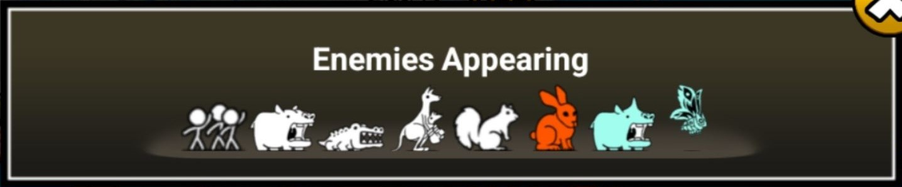
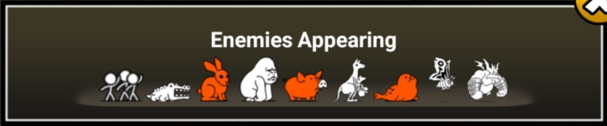
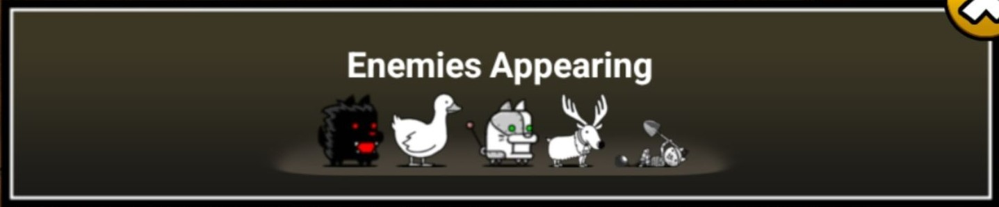
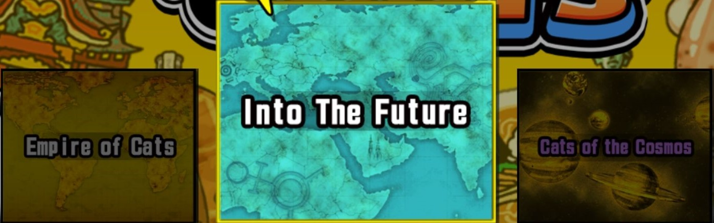
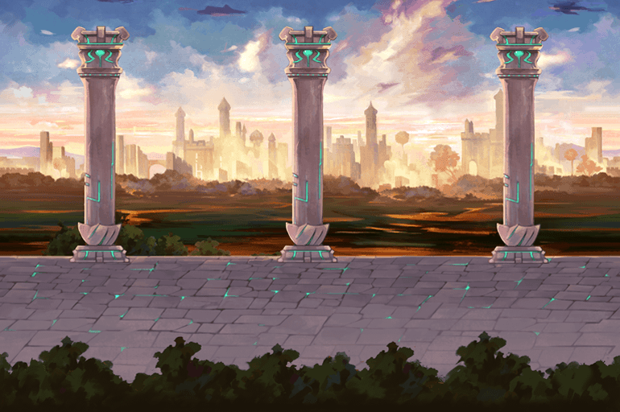

The stages in Battle Cats are what make the game interesting. This is because of the different
enemy types you encounter and the different difficulties a stage could be. The different enemy
types provide a non-repetitive experience since you’ll need to use different strategies for
certain enemy types. Later stages in the game usually have at least 2 different types of enemies
so creating the “perfect” line-up is kind of difficult and makes said later stages pretty hard to
clear. There have been times that I only brought cats that were great against one type of enemy
and that led to me not being able to defeat the Metal enemies (more of this in the
BC Wiki)
that suddenly came. Other than the combination of enemy types, a stage’s difficulty can also increase due to its star rating.
There is a total of 12 star ratings, with 1-stars being the easiest stages and 12-stars being the
hardest. Higher star ratings mean higher enemy strength magnifications (these magnifications
increase all of an enemy’s stats and can make the most basic of enemies into a terrifying boss).
You can read more about the enemy types, different enemies, and enemy magnifications in the official
BC Wiki.



The story part of the game or the sagas that you need to beat in order to “finish” the game are
Empire of Cats,
Into the Future,
and Cats of the Cosmos.
These 3 all have 3 chapters each which
increase in difficulty each time (Chap 2 is harder than Chap 1, and Chap 3 is harder than Chap
2). The main tip I can give to beat all of them is to practice timings and management of your
cats, know which cats to bring and which ones should be upgraded (and true formed, which is
just upgrading them to a third form) first. In Empire of Cats, you will only encounter Traitless,
Red, and Floating enemies so it isn’t really too difficult. However, that all changes once you’re
in Into the Future, all the enemies are Aliens but they are incredibly powerful and having strong
anti-Aliens isn’t required but will make clearing stages so much easier and less time-consuming.
Cats of the Cosmos is also the same in that regard, all enemies are Aliens but some of them are
now starred, which means they now have barriers and you’ll need specific cats that can break
said barriers.

